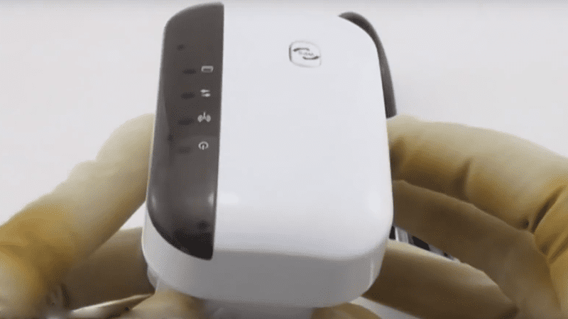

Une solution improbable pour une connexion internet lente enfin disponible au public
04/10/19 Cecile Thomas

„C’est juste incroyable que dans un pays aussi développé que la France, nous avons un Internet pire que l’Albanie, par exemple ! „ -L’inventeur du iBooster Jens Parmer
Résumé: Une connexion internet lente ruine votre expérience journalière et votre humeur. Marre de voir des cercles qui tournent sur votre écran? iBooster promet de faire la différence...
Accéder rapidement à des sites internet et plus facile que jamais avec iBooster.
Tout a déjà vécu ça… Vous voulez regarder des vidéos sur Youtube ou Netflix ? Mais la seule chose à voir, c’est une barre de chargement qui n’a pas avancé après 10 minutes. Et puis les grosses photos ne peuvent tout simplement pas être envoyées par e-mail parce que le téléchargement prend une éternité. C’est ce que nous avons ressenti au sein de la rédaction. Selon des tests dans des revues spécialisées, une nouvelle invention devrait résoudre ce problème ! Nous avons commandé un exemplaire et l’avons testé intensivement. Annonçons directement la couleur : nous sommes ravis.
La lenteur d’Internet rendait régulièrement l’inventeur de cet appareil fou.
Depuis plus de 17 ans, l’étudiant de Paris travaille pour l’un des plus grands fournisseurs d’accès à Internet en France. Quand il a remarqué que les opérateurs Internet ralentissent la vitesse, bien que les clients paient pour une meilleure performance, le bon sens de l’ingénieur a resurgit ! Il fait appel à son courage et a quitté son bon CDI pour devenir indépendant. Son but : mettre au point un dispositif permettant de supprimer l’étranglement de la vitesse tout en servant d’amplificateur pour les réseaux wifi de mauvaise qualité.
C’est quand même un comble que dans un pays aussi développé que la France, Internet fonctionne moins bien qu’en Albanie ! Évidemment, ce n’est pas moi qui pourrai améliorer la couverture du réseau tout seul. Mais beaucoup de gens ont également des problèmes de vitesse de connexion chez eux, sur leur propre réseau wifi. Il suffit d’aller sur le balcon, dans le jardin ou dans une autre pièce pour que la connexion Internet se dégrade ou s’interrompe complètement. Mon produit vous permet de retrouver effectivement sur vos appareils la vitesse de connexion offerte par votre fournisseur : terminés les problèmes de réseau wifi, les images floues sur Skype et les ralentissements de vidéos sur YouTube ou Netflix !
Comment fonctionne exactement cette invention ?
La plupart des foyers sont équipés d’un routeur. Il convertit Internet de la ligne en ondes courtes, qui sont probablement connues de tous sous le nom de wifi. L’adaptateur pour la prise de courant inventé par Jens P. amplifie le signal du routeur à tel point que les problèmes de réception appartiennent au passé. En même temps, l’appareil bloque la transmission des données de consommation au fournisseur d’accès Internet, ce qui rend la limitation de vitesse impossible !
Tout ce que vous avez à faire est de brancher l’appareil dans la prise de courant. La connexion au routeur reste très simple, de sorte que même les utilisateurs les plus âgés peuvent profiter de cette invention ingénieuse.
Nous avons décidé de tester nous-mêmes le iBooster pour voir à quel point la vitesse d’Internet s’améliore. Pour un prix d’achat de 49€, il n’est pas plus cher que les amplificateurs de signaux conventionnels, après la commande il n’a fallu que quelques jours pour que l’on reçoive le colis.
Comme nos collègues fumeurs se plaignaient régulièrement qu’il n’y avait pas de réception wifi dans le fumoir, nous y avons installer l’appareil pour une période de test d’une semaine.
Les résultats
Les magazines spécialisés parlent de « … la meilleure réception en juste quelques secondes ». En fait, nos collègues rapportent qu’en plus d’avoir désormais accès à Internet dans leur fumoir, la connexion est très rapide !
Après un seul jour d’essai, tout le monde était d’accord pour que l’appareil ne soit pas désinstallé après 7 jours comme prévu, mais qu’il reste branché en permanence. C’est vraiment impressionnant ce qu’il réalise. Lors du dernier test de vitesse que nous avons fait ici dans le bureau de la rédaction, nous avions une vitesse de téléchargement d’environ 8 Mbit, maintenant c’est 32 Mbit ! Nous pensons que le produit correspond exactement à ce que de nombreuses personnes recherchent.
L’installation est vraiment très simple, il suffit de le brancher dans la prise !
Le iBooster en action :
Quelles sont les fonctionnalités du iBooster ?
- Il fonctionne avec une fréquence de 2,4 Ghz
- Avec une vitesse de transmission allant jusqu’à 300 Mbps, il est équipé pour toutes les applicationsLAN
- Connexion LAN RJ45
- Installation facile
- Aucun CD d’installation nécessaire
- Applicabilité universelle
"iBooster vous donne la tranquillité d'esprit de pouvoir regarder des vidéos sans devoir attendre le temps qu'elles chargent. En plus, chaque membre de la famille peut profiter de iBooster à tout moment. "
Avantages:
- Facile à utiliser - vraiment tout le monde peut s'en servir
- Rapport qualité / prix nettement supérieur à celui de ses concurrents directs
- Remise de 50% actuellement disponible
Désavantages:
- Risque d'être épuisé sous peu
Comment puis-je obtenir le iBooster
Comment profiter du iBooster:
- Commander le iBooster sur le site officiel.
- Connectez le iBooster à une prise électrique et démarrez la configuration facile
- Profitez d’une connexion Internet rapide
C’est aussi simple que ça !
Cliquez ici - Obtenez iBooster avec 50% de remise et la livraison gratuite >>